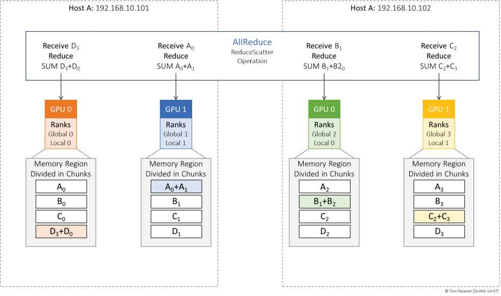
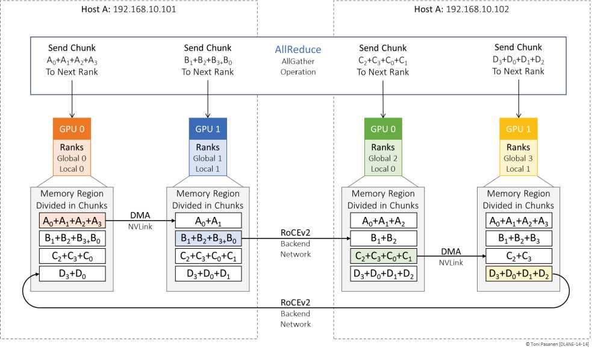

4 GPU Ring，每 GPU 参数切 4 段，每轮各段向邻居传一段并求和，三轮后每 GPU 持有 1 段全局和。书 p337-344 三轮图解，跟着箭头走一遍。流量 = 2×(N-1)/N×数据量，N 越大越均。
每 GPU 把自己的全局段广播 Ring，三轮后人人拼出完整参数。书 p348-353。两阶段合称 AllReduce = ReduceScatter + AllGather。
Ring 步数 2(N-1)，时延敏感；大 N 用树/分层。AllReduce 周期性风暴 = Fabric 的最大考验，Ch10-13 所有优化都为它服务。看到 GPU 利用率周期性掉零，先看 AllReduce 是否被网拖住。


4 GPU、参数 ABCD，走一遍两阶段，写出每轮持有。